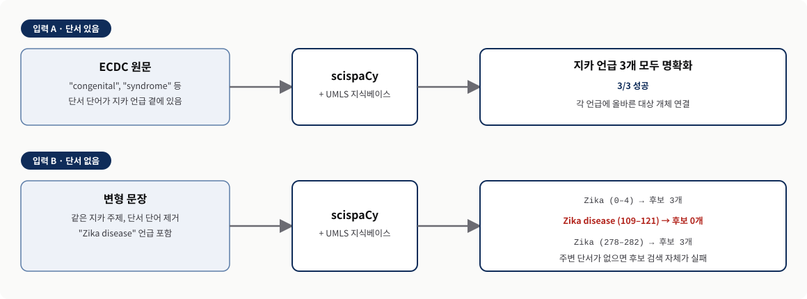
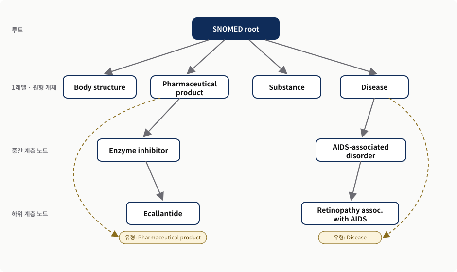
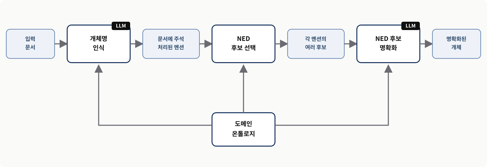
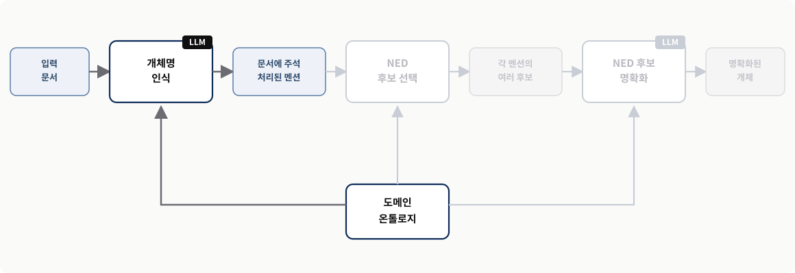
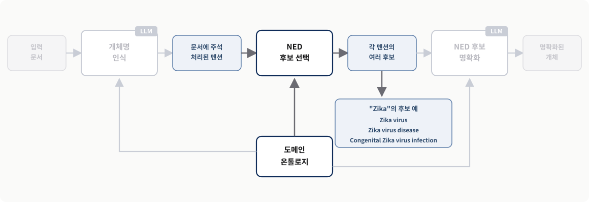
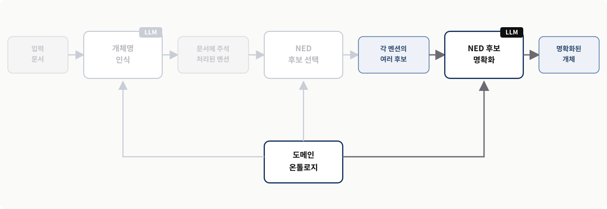
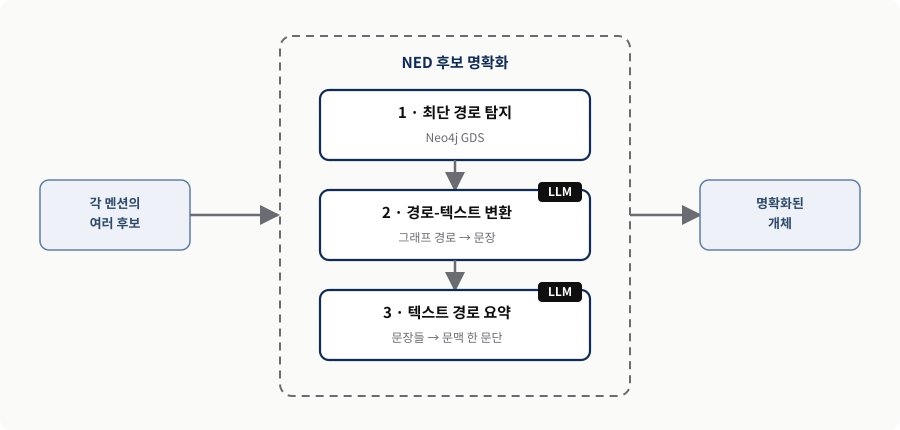
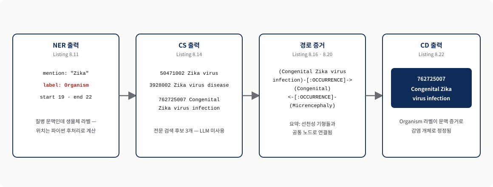

전통적 NED의 한계
문장 속 단어가 가리키는 진짜 대상을 지식베이스의 정확한 항목으로 연결하는 작업에서, 기존 도구가 어디서 막히는지 이해합니다.
지식 그래프와 LLM 실전
Chapter 8
7장이 의학 전문 사전으로 단어를 연결하는 방법이었다면, 8장은 그 사전 속 개념들의 관계까지 쓰는 방법입니다.
문장 속 단어가 가리키는 진짜 대상을 지식베이스의 정확한 항목으로 연결하는 작업에서, 기존 도구가 어디서 막히는지 이해합니다.
방대한 텍스트로 학습한 범용 LLM과 도메인 온톨로지를 결합해 NED를 수행하는 방법을 배웁니다.
최단 경로 탐지, 경로-텍스트 변환, 텍스트 경로 요약을 잇는 과정을 직접 구현합니다.
예시 — "Apple"이라는 단어만 보면 과일인지 회사인지 모호합니다. 주변에 "아이폰·주가·신제품"이 있고 지식 그래프에 Apple Inc. → PRODUCES → iPhone 관계가 있다면 회사라고 판단할 수 있습니다. 모호한 "Apple"이 이 장의 "Zika" 같은 언급, 주변 단어가 문맥 단서, 그래프 관계가 도메인 온톨로지 속 개체 간 관계에 해당합니다.
역할 분담 — LLM은 문장을 이해하고 설명하며, 온톨로지는 검증된 후보와 관계를 제공합니다.
각 절이 답하는 질문과 이 장의 답입니다.
| 절 | 질문 | 이 장의 답 |
|---|---|---|
| 8.1 | 전통적 NED의 무엇이 부족한가 | 개체 사이의 관계와 경로를 쓰지 못한다 |
| 8.2 | 관계는 어디서 오는가 | SNOMED를 Neo4j에 적재하고 라벨을 전파한다 |
| 8.3 | 모델은 무엇을 쓰는가 | Ollama + Llama 3.1 8B를 로컬에 배포한다 |
| 8.4 | 어떻게 이어 붙이는가 | NER → 후보 선택 → 후보 명확화 |
| 8.5 | 무엇이 남는가 | 온톨로지와 오픈 LLM이 서로의 빈틈을 메운다 |
발표의 약속 — 도구 이름이 아니라 역할 분담의 설계와 그 한계를 가져갑니다.
SECTION 01 · 교재 §8.1
잘하는 것과 못하는 것을 먼저 가른다
01scispaCy는 UMLS(통합 의학 용어 체계)처럼 표준화된 개체를 담은 어휘집과 온톨로지를 내장합니다.
역할
텍스트 속 언급(mention)을 실제 대상과 연결해 모호함을 없앱니다.
효과
여러 기관의 데이터를 한 기준으로 분석할 수 있게 됩니다.
예시 — "고혈압", "hypertension", "혈압이 높은 병"을 같은 표준 개념 ID로 연결합니다. 서로 다른 표현이 언급(mention)이고, 하나의 표준 개념 ID가 UMLS 어휘집에 담긴 표준화된 개체입니다.
여기까지는 잘합니다 — 문제는 이 어휘집을 어떻게 쓰느냐에서 갈립니다.
앞의 셋은 운영 비용 문제이고, 네 번째가 설계 문제입니다.
| 한계 | 무엇이 문제인가 |
|---|---|
| 도메인 고정 | 특정 응용 도메인, 즉 생물의학 분야에만 맞춰 설계되어 있다 |
| 갱신 비용 | 새로운 개체와 용어를 반영하도록 참조 지식베이스를 확장하고 갱신하기 어렵다 |
| 정보 미활용 | 지식베이스에 담긴 방대한 정보를 온전히 활용하지 못한다 |
| 관계 미사용 | 개체 사이에 이미 존재하는 관계와 경로를 명확화 작업에 쓰지 못한다 |
예시 — "Mercury"는 수성·수은·자동차 브랜드를 뜻할 수 있습니다. 이름만 비교하면 어렵지만 Mercury → IS_A → Planet, Mercury → ORBITS → Sun 관계를 보면 수성이라는 판단이 쉬워집니다. 이 관계 정보가 바로 네 번째 항목이 지적하는, 전통적 NED가 쓰지 못하는 정보입니다.
뿌리 — 전문 사전은 갖고 있지만 사전 항목들이 서로 어떻게 연결되는지를 쓰지 못합니다.
7장 도입부의 ECDC 문구입니다.
입력 A · ECDC 원문구
4월 13일이 있는 주에 벨리즈는 처음으로 모기 매개 지카 바이러스 전파를 보고했습니다. 관찰된 선천성 지카 증후군 및 기타 신경학적 합병증의 증가에 관한 업데이트. 지카 바이러스 감염과 잠재적으로 연관된 소두증 및 기타 태아 기형.
결과 — scispaCy는 "Zika" 주변의 문맥 단어를 이용해 세 개의 올바른 명확화 결과를 찾아냅니다. 예시 — "Apple은 달고 아삭하다"에서 "달다·아삭하다"만으로 과일임을 쉽게 알 수 있는 것과 같습니다. "congenital(선천성)", "syndrome(증후군)"이 그 강한 단서 단어입니다.
쉬운 문제 — 정답을 알려 주는 강한 단어가 언급 가까이에 있습니다.
같은 지카 주제이지만 명확화를 뒷받침할 단어가 언급 곁에 없습니다.
입력 B · 변형 문구
지카는 플라비바이러스과(Flaviviridae)에 속하며 이집트숲모기(Aedes)에 의해 전파됩니다. 지카병 및 치쿤구니야열 같은 다른 증후군에 걸린 사람들은 바이러스성 근육통, 감염성 부종, 감염성 결막염 같은 증상을 자주 경험합니다. 지카의 심각한 결과는 임신 중 태반 장벽을 통과하는 능력에서 비롯되며, 이는 소두증과 선천성 기형을 유발합니다.
예시 — "그 회사는 새 휴대폰을 공개했다. Apple의 주가가 올랐다"에서 Apple 바로 옆에 company가 없습니다. 앞 문장의 "회사·휴대폰"과 현재 문장의 "주가"를 함께 봐야 하는 것처럼, 플라비바이러스과·소두증·선천성 기형이 여러 문장에 나뉘어 있습니다.
어려운 문제 — 결정적 단서가 바로 옆에 붙어 있지 않습니다.
입력 B에 대한 scispaCy의 실제 출력입니다.
Recognized entity: Zika 0 4 Ranked target candidates: - C0276289 Zika Virus Infection - C0318793 Zika Virus - C4687930 Zika Virus Antibody Measurement Recognized entity: Zika disease 109 121 Ranked target candidates: Recognized entity: Zika 278 282 Ranked target candidates: - C0276289 Zika Virus Infection - C0318793 Zika Virus - C4687930 Zika Virus Antibody Measurement
코드 읽기
Recognized entity는 표현을 찾았다는 뜻이고, Ranked target candidates 아래가 비어 있으면 연결할 표준 개체 후보를 찾지 못했다는 뜻입니다. 첫째·셋째 "Zika"는 C0276289로 연결되지만 둘째 "Zika disease"만 비어 있습니다. 답을 잘못 고른 정도가 아니라 검토할 후보조차 만들지 못했습니다.
위 코드가 이 리스팅의 전부입니다.
두 입력에 대한 scispaCy의 명확화 결과를 나란히 놓았습니다.

이 접근은 풍부한 온톨로지를 쓸 수 있는 다른 도메인에도 그대로 적용할 수 있습니다.
LLM
문맥을 해석하고 경로를 문장으로 옮기며 요약합니다. 사실의 출처로는 쓰지 않습니다.
온톨로지
후보 개체와 개체 사이의 관계·경로를 제공합니다. 명확화의 근거가 여기서 나옵니다.
비유 — LLM은 설명을 잘하는 의사이고 온톨로지는 표준 의학 교과서와 코드집입니다. 의사가 문맥을 해석하되, 선택 가능한 병명과 관계는 코드집에서 확인하는 구조입니다.
이 장의 핵심 — 두 역할을 잘 엮는 것입니다. LLM에게 모든 것을 맡기지 않습니다.
SECTION 02 · 교재 §8.2
관계를 쓰려면 먼저 관계를 실어야 한다
0245만 개가 넘는 개념과 풍부한 관계 유형을 담은 다국어 임상 용어 저장소입니다.
설명 파일
개체 이름과 별칭을 제공합니다. 노드와 관계에 붙일 이름표입니다.
관계 파일
개체와 관계를 식별하는 숫자 코드입니다. 노드 사이를 잇는 선입니다.
예시 — 그래프에는 선천성 지카 감염 → 선천성, 소두증 → 선천성처럼 두 개념이 공통 속성에 연결된 정보가 들어갈 수 있습니다. 이 파일들의 실제 모습은 7장 7.5.2절을 참고하면 됩니다.
왜 지도인가 — 개념과 관계가 함께 들어 있어 경로를 따라갈 수 있습니다.
계층을 따라 정보가 전파되는 방식을 보여 줍니다.

리스팅 8.3~8.5가 두 SNOMED 파일을 Neo4j 그래프로 옮깁니다.
관계 파일로부터 Neo4j에 노드와 관계를 만듭니다. 지하철역과 역 사이의 노선을 만드는 일입니다.
설명 파일에서 이름과 별칭을 뽑아냅니다. 각 역과 노선에 사람이 읽을 수 있는 이름을 붙이는 일입니다.
계층을 따라 1레벨 노드의 정보를 더 깊은 노드로 전파합니다. 각 역이 어느 권역에 속하는지 상위 분류를 내려보내는 일입니다.
참고 — 주석 달린 버전과 자세한 설명은 7.6.4절에, 전체 예제 코드는 책의 온라인 저장소에 있습니다.
관계 파일을 읽어 Neo4j에 노드와 관계를 만드는 임포터입니다.
[...]
class SnomedRelationshipsImporter(BaseImporter):
[...]
def set_constraints(self):
queries = [
(
"CREATE CONSTRAINT IF NOT EXISTS FOR (n:SnomedEntity) "
"REQUIRE n.id IS UNIQUE"
),
(
"CREATE INDEX snomedNodeName IF NOT EXISTS "
"FOR (n:SnomedEntity) ON (n.name)"
),
(
"CREATE INDEX snomedRelationId IF NOT EXISTS "코드 읽기
set_constraints가 SnomedEntity.id 유일성과 이름·관계 인덱스를 걸고, import_snomed_rels가 배치 단위로 관계를 MERGE합니다. 관계 유형이 116680003(is-a)일 때 SNOMED_IS_A를 추가로 만들어 두는데, 이것이 뒤의 계층 전파에 쓰입니다.
이어지는 2/3 화면에서 이 리스팅을 계속 읽습니다.
관계 파일을 읽어 Neo4j에 노드와 관계를 만드는 임포터입니다.
"FOR ()-[r:SNOMED_RELATION]-() ON (r.id)"
),
(
"CREATE INDEX snomedRelationType IF NOT EXISTS "
"FOR ()-[r:SNOMED_RELATION]-() ON (r.type)"
),
(
"CREATE INDEX snomedRelationUmls IF NOT EXISTS "
"FOR ()-[r:SNOMED_RELATION]-() ON (r.umls)"
),
]
for q in queries:
self.connection.query(q, db=self.db)
코드 읽기
set_constraints가 SnomedEntity.id 유일성과 이름·관계 인덱스를 걸고, import_snomed_rels가 배치 단위로 관계를 MERGE합니다. 관계 유형이 116680003(is-a)일 때 SNOMED_IS_A를 추가로 만들어 두는데, 이것이 뒤의 계층 전파에 쓰입니다.
이어지는 3/3 화면에서 이 리스팅을 계속 읽습니다.
관계 파일을 읽어 Neo4j에 노드와 관계를 만드는 임포터입니다.
def import_snomed_rels(self):
query = """
UNWIND $batch as item
MERGE (e1:SnomedEntity {id: item.sourceId})
MERGE (e2:SnomedEntity {id: item.destinationId})
MERGE (e1)-[:SNOMED_RELATION {id: item.typeId}]->(e2)
FOREACH(ignoreMe IN CASE WHEN item.typeId = '116680003'
THEN [true] ELSE [] END|
MERGE (e1)-[:SNOMED_IS_A]->(e2)
)
"""
size = self.get_csv_size(snomedRels_file)
self.batch_store(snomed_rels_query, self.get_rows(snomedRels_file),
size=size)코드 읽기
set_constraints가 SnomedEntity.id 유일성과 이름·관계 인덱스를 걸고, import_snomed_rels가 배치 단위로 관계를 MERGE합니다. 관계 유형이 116680003(is-a)일 때 SNOMED_IS_A를 추가로 만들어 두는데, 이것이 뒤의 계층 전파에 쓰입니다.
위 코드가 이 리스팅의 전부입니다.
코드에 등장한 장치를 일상 언어로 옮깁니다.
같은 주민등록번호를 가진 사람을 두 명 만들지 못하게 하는 규칙과 같습니다. SnomedEntity.id의 유일성을 보장합니다.
책 뒤의 찾아보기처럼 이름과 관계를 빠르게 찾게 해 줍니다.
MERGE데이터가 없으면 만들고 이미 있으면 기존 데이터를 재사용합니다.
116680003 — "A는 B의 한 종류다"라는 상위·하위 관계를 나타내는 특별한 코드입니다. 이 코드가 계층 전파의 근거가 됩니다.
왜 중요한가 — 이 네 장치가 없으면 중복 노드와 느린 검색으로 뒤 단계가 무너집니다.
모든 관계는 SNOMED_RELATION으로 저장되고, 그중 상위-하위 관계만 SNOMED_IS_A로 한 번 더 표시됩니다.
SNOMED_RELATION
"지카와 소두증이 어떻게 연결되는가?"처럼 관계 종류를 가리지 않는 질문에 씁니다.
SNOMED_IS_A
"소두증이 어느 상위 의료 범주에 속하는가?"처럼 계층을 타고 오르내릴 때 골라 씁니다.
효과 — 두 벌로 두면 각 질문에 맞는 도로망만 골라 탐색 비용을 줄일 수 있습니다.
설명 파일에서 개체 이름과 별칭을 읽어 채웁니다.
[...]
class SnomedNamesImporter(BaseImporter):
[...]
def import_snomed_names(self, snomedNames_file):
snomed_names_concepts_query = """
UNWIND $batch as item
MATCH (e1:SnomedEntity)
-[r:SNOMED_RELATION {id: item.conceptId}]->
(e2:SnomedEntity)
WHERE item.conceptId <> '116680003' AND r.id = item.conceptId
SET r.type = CASE
WHEN r.type IS NULL THEN item.termAsType
ELSE r.type END,코드 읽기
snomed_names_concepts_query는 숫자 관계 코드에 IS_A, RISK_FACTOR_FOR처럼 읽을 수 있는 이름을 붙이고, snomed_names_entities_query는 개체 노드에 myocardial infarction, heart attack 같은 대표 이름과 별칭을 붙입니다. 중복 방지는 주소록에 이미 저장된 별명을 다시 추가하지 않는 것과 같습니다.
이어지는 2/3 화면에서 이 리스팅을 계속 읽습니다.
설명 파일에서 개체 이름과 별칭을 읽어 채웁니다.
r.aliases = CASE
WHEN item.termAsType IN r.aliases THEN r.aliases
ELSE coalesce(r.aliases,[]) + item.termAsType END
"""
snomed_names_entities_query = """
UNWIND $batch as item
MATCH (e:SnomedEntity {id: item.conceptId})
SET e.name = CASE
WHEN e.name IS NULL THEN item.term
ELSE e.name END,
e.aliases = CASE
WHEN item.term in e.aliases THEN e.aliases코드 읽기
snomed_names_concepts_query는 숫자 관계 코드에 IS_A, RISK_FACTOR_FOR처럼 읽을 수 있는 이름을 붙이고, snomed_names_entities_query는 개체 노드에 myocardial infarction, heart attack 같은 대표 이름과 별칭을 붙입니다. 중복 방지는 주소록에 이미 저장된 별명을 다시 추가하지 않는 것과 같습니다.
이어지는 3/3 화면에서 이 리스팅을 계속 읽습니다.
설명 파일에서 개체 이름과 별칭을 읽어 채웁니다.
ELSE coalesce(e.aliases, []) + item.term END
"""
size = self.get_csv_size(snomedNames_file)
self.batch_store(
snomed_names_concepts_query,
self.get_rows(snomedNames_file),
size=size)
self.batch_store(
snomed_names_entities_query,
self.get_rows(snomedNames_file),
size=size)
[...]코드 읽기
snomed_names_concepts_query는 숫자 관계 코드에 IS_A, RISK_FACTOR_FOR처럼 읽을 수 있는 이름을 붙이고, snomed_names_entities_query는 개체 노드에 myocardial infarction, heart attack 같은 대표 이름과 별칭을 붙입니다. 중복 방지는 주소록에 이미 저장된 별명을 다시 추가하지 않는 것과 같습니다.
위 코드가 이 리스팅의 전부입니다.
이 단계가 끝나면 각 개체는 대표 이름과 여러 별칭을 갖게 됩니다.
입력
문장에 heart attack이 나와도 검색이 가능해야 합니다.
연결
표준 개념 myocardial infarction을 후보로 검색할 수 있습니다.
연결 — 이 이름과 별칭이 뒤의 후보 선택 단계에서 전문 검색 인덱스의 재료가 됩니다.
루트 노드(138875005) 아래 1레벨 노드가 원형 범주(Disease, Organism, Procedure)입니다.
[...]
class SnomedLabelPropagator():
[...]
def get_rows(self):
propagation_query = """
MATCH p=(n:SnomedEntity)<-[:SNOMED_IS_A]-(m:SnomedEntity)
WHERE n.id= "138875005" // Root node
WITH distinct m as first_node
CALL apoc.path.expandConfig(first_node, { // #A
relationshipFilter: '<SNOMED_IS_A',
minLevel: 1,
maxLevel: -1,
uniqueness: 'RELATIONSHIP_GLOBAL'
}) yield path코드 읽기
#A는 1레벨 노드에서 하위 방향으로 경로를 확장하는 지점, #B는 확장된 경로에 등장한 모든 노드를 펼쳐 모으는 지점, #C는 각 하위 노드의 id와 붙일 라벨을 돌려주는 지점입니다.
이어지는 2/2 화면에서 이 리스팅을 계속 읽습니다.
루트 노드(138875005) 아래 1레벨 노드가 원형 범주(Disease, Organism, Procedure)입니다.
UNWIND nodes(path) as other_level // #B
WITH first_node, collect(DISTINCT other_level) as uniques
UNWIND uniques as unique_other_level
WITH first_node, unique_other_level
WHERE not first_node.name in
coalesce(unique_other_level.type,[])
RETURN unique_other_level.id as id, first_node.name as label // #C
"""
with self._driver.session(database=self._database) as session:
result = session.run(query=propagation_query)
for record in iter(result):
yield dict(record)
[...]코드 읽기
#A는 1레벨 노드에서 하위 방향으로 경로를 확장하는 지점, #B는 확장된 경로에 등장한 모든 노드를 펼쳐 모으는 지점, #C는 각 하위 노드의 id와 붙일 라벨을 돌려주는 지점입니다.
위 코드가 이 리스팅의 전부입니다.
SNOMED_IS_A 관계를 거꾸로 확장하며 의미 유형을 트리 전체에 전파합니다.
연구개발본부 → AI연구소 → NLP팀 구조라면 NLP팀에도 "연구개발본부 소속"이라는 정보가 전달됩니다.
"복부 초음파 검사"가 여러 단계 아래에 있어도 최상위 Procedure 라벨을 갖게 됩니다.
깊은 곳의 세밀한 개체도 자신이 어떤 큰 범주에 속하는지 알게 됩니다.
왜 이것이 필요한가 — NER 단계에서 "이 온톨로지가 인정하는 범주 목록"을 뽑아 쓰는 밑바탕이 됩니다. LLM이 임의의 분류명을 만들지 않고 SNOMED에 실재하는 범주 안에서만 분류하도록 준비한 것입니다.
SECTION 03 · 교재 §8.3
데이터 통제권을 내주지 않고 모델을 쓴다
03Ollama는 자기 컴퓨터에서 직접 LLM을 실행하게 해 주는 오픈소스 도구입니다.
데이터에 대한 통제권을 온전히 유지합니다.
외부 호출이 사라져 지연이 줄어듭니다.
외부 제공자에 대한 의존을 줄입니다.
모델 — Llama 3.1 8B는 메타가 공개한 80억 파라미터 오픈소스 LLM으로 최대 128,000 토큰의 문맥 길이를 지원합니다. Ollama는 macOS·Linux·Windows와 호환되며 https://ollama.com/에서 받을 수 있습니다.
선택 이유 — 범용 모델도 도메인 온톨로지와 결합하면 틈새 영역에서 잘 작동함을 보이려는 시도입니다.
두 줄이면 됩니다.
ollama serve ollama pull llama3.1:latest
코드 읽기
첫 줄은 Ollama 서버를 띄우고, 둘째 줄은 최신 Llama 3.1 모델을 내려받습니다.
위 코드가 이 리스팅의 전부입니다.
Ollama는 OpenAI Chat Completions API와 호환되도록 만들어져 있습니다.
from openai import OpenAI
class LLM_Model():
def __init__(self, url='http://localhost:11434/v1', key="default"):
self.client = OpenAI(
base_url=url, # 모델이 서비스되는 기본 URL
api_key=key, # OpenAI Chat Completions API가 요구하지만
# 오픈 모델에서는 사용되지 않는 값
)
def generate(self, messages):코드 읽기
OpenAI 클라이언트를 로컬 주소(http://localhost:11434/v1)로 향하게 합니다. api_key는 API가 형식상 요구하지만 오픈 모델에는 쓰이지 않으므로 아무 값이나 넣어도 됩니다. 응답을 response.choices[0].message.content로 꺼내는 것은 반환 형식이 ChatGPT API 형식임을 전제한 것입니다.
이어지는 2/2 화면에서 이 리스팅을 계속 읽습니다.
Ollama는 OpenAI Chat Completions API와 호환되도록 만들어져 있습니다.
response = self.client.chat.completions.create(
model="llama3.1:latest", # Ollama로 내려받은 llama3.1:latest 지정
messages=messages,
temperature=0,
max_tokens=4000,
top_p=1,
frequency_penalty=0,
presence_penalty=0,
)
#### It assumes as response the ChatGPT API format
return response.choices[0].message.content코드 읽기
OpenAI 클라이언트를 로컬 주소(http://localhost:11434/v1)로 향하게 합니다. api_key는 API가 형식상 요구하지만 오픈 모델에는 쓰이지 않으므로 아무 값이나 넣어도 됩니다. 응답을 response.choices[0].message.content로 꺼내는 것은 반환 형식이 ChatGPT API 형식임을 전제한 것입니다.
위 코드가 이 리스팅의 전부입니다.
모델을 NED 시스템에 끼워 넣는 과정이 단순해집니다.
전
모델을 바꿀 때마다 호출 코드를 다시 써야 했습니다.
후
로컬에 배포한 모델과도 앞 장들에서 쓰던 것과 같은 코드로 곧장 대화할 수 있습니다.
다음 — 이제 이 모델을 종단 간 NED 과정에 끼워 넣습니다.
SECTION 04 · 교재 §8.4
세 단계가 모두 온톨로지를 참조한다
04입력 문서에서 명확화된 언급까지 이르는 멘탈 모델입니다.

흐름은 두 축으로 요약됩니다. LLM이 온톨로지를 이용해 개체를 찾아 라벨을 붙이고, 다시 다단계 접근으로 가장 정확한 개체를 고릅니다.
| 단계 | 입력 | 출력 | LLM |
|---|---|---|---|
| NER | 비정형 입력 문서 | 범주가 붙은 개체 언급 | 사용 |
| 후보 선택(CS) | 언급 + 도메인 온톨로지 | 언급별 후보 개체 목록 | 미사용 |
| 후보 명확화(CD) | 후보 + 경로 요약 + 원문장 | 언급별 확정 개체 | 사용 |
예 — "Zika"는 SNOMED의 "Disease" 개념으로 인식된 뒤, Zika Virus·Zika Virus Infection 같은 후보를 거쳐 하나로 좁혀집니다.
이 LLM 주도 접근은 명확화 과정의 매 단계마다 도메인 전용 온톨로지를 통합합니다.
무엇을 끌어들이나
온톨로지의 두 구조를 함께 씁니다. 계층은 범주를, 관계는 경로를 제공합니다.
무엇이 좋아지나
개체 분류와 명확화에 대해 더 근거 있는 결정을 내릴 수 있습니다.
언제 빛나는가 — 용어가 여러 의미나 연관을 가질 수 있는 복잡한 경우입니다. 또한 이 구조에 머신러닝이 반드시 들어가야 하는 것은 아닙니다. 신호가 재량적 연구·규칙 기반·학습 모델 중 어디에서 나왔든 같은 생애주기와 검증 규칙을 적용할 수 있습니다.
다음 — 세 단계를 하나씩 분해해 봅니다.
SECTION 05 · 교재 §8.4.1
범주 목록도 온톨로지에서 가져온다
05NER의 목표는 언급된 개체명을 찾아 Disease·Organism·Procedure 같은 미리 정해진 범주로 분류하는 것입니다.
NER의 질문
"문장에 어떤 이름이 있고, 대략 무슨 종류인가?"
NED의 질문
"그 이름은 지식베이스의 정확히 어느 항목인가?"
도메인이 바뀌면 — 의료에서는 Disease·Procedure를 찾지만, 제조 문서에서는 Product·Part·Defect·Process를 찾도록 도메인 전문가와 범주를 정해야 합니다. 실용적인 방법은 프롬프트 엔지니어링으로 관심 개체 유형을 프롬프트에 명시하는 것입니다.
이 시나리오 — SNOMED의 구조화된 지식을 끌어들여 더 정밀하고 문맥을 아는 인식을 수행합니다.
SNOMED에서는 1레벨 노드가 범주를 정의하고 그 정보가 다른 모든 노드로 전파됩니다.

NER를 하려면 온톨로지에서 미리 정의된 범주를 모두 가져와야 합니다.
MATCH (n:SnomedEntity) UNWIND n.type as named_entity WITH DISTINCT named_entity, count(named_entity) as num_of_entities ORDER BY num_of_entities DESC RETURN collect(named_entity) as named_entities
코드 읽기
모든 SnomedEntity 노드의 type 속성(앞의 라벨 전파로 채워진 범주)을 펼쳐 세고, 빈도 높은 순으로 정렬한 뒤 하나의 리스트로 모아 돌려줍니다. 이 리스트가 NER 프롬프트의 "허용 범주 목록"이 됩니다.
위 코드가 이 리스팅의 전부입니다.
쿼리 세 단계를 일상 언어로 옮깁니다.
모든 노드에서 type을 꺼냅니다.
같은 범주가 몇 번 등장하는지 세어 빈도 높은 순으로 정렬합니다.
collect로 하나의 목록을 만들어 프롬프트의 {named_entities} 자리에 넣습니다.
효과 — 모델이 분류명을 마음대로 만들지 않고 제공된 객관식 보기 안에서만 고르게 됩니다. 앞의 라벨 전파가 바로 이 목록을 만들기 위한 준비 작업이었습니다.
전체 프롬프트는 코드 저장소에 있습니다.
system = """You are an assistant capable of extracting named entities in the
medical domain.
Your task is to extract ALL single mentions of named entities from the text.
You must only use one of the pre-defined entities from the following list:
{named_entities}.
No other entity categories are allowed.
For each sentence, extract the named entities and present the output in
valid JSON format""".format(named_entities=named_entities)
input = """Risk factors for rhinocerebral mucormycosis include poorly
controlled diabetes mellitus and severe immunosuppression."""
assistant = [
{코드 읽기
system은 시험 규칙과 허용된 답안 종류를, input은 연습 문제를, assistant는 모범 답안을 보여 줍니다. "JSON으로 답하라"고 말만 하는 것보다 실제 JSON 예시를 함께 보여 주는 편이 형식 오류를 줄입니다.
이어지는 2/3 화면에서 이 리스팅을 계속 읽습니다.
전체 프롬프트는 코드 저장소에 있습니다.
"sentence": """Risk factors for rhinocerebral mucormycosis include
poorly controlled diabetes mellitus and severe immunosuppression.""",
"entities": [
{
"id": 0,
"mention": "Risk factors",
"label": "Events"
},
{
"id": 1,
"mention": "rhinocerebral mucormycosis",
"label": "Disease"
},코드 읽기
system은 시험 규칙과 허용된 답안 종류를, input은 연습 문제를, assistant는 모범 답안을 보여 줍니다. "JSON으로 답하라"고 말만 하는 것보다 실제 JSON 예시를 함께 보여 주는 편이 형식 오류를 줄입니다.
이어지는 3/3 화면에서 이 리스팅을 계속 읽습니다.
전체 프롬프트는 코드 저장소에 있습니다.
{
"id": 2,
"mention": "poorly controlled diabetes mellitus",
"label": "Disease"
},
{
"id": 3,
"mention": "severe immunosuppression",
"label": "Qualifier value"
}
]
}
]코드 읽기
system은 시험 규칙과 허용된 답안 종류를, input은 연습 문제를, assistant는 모범 답안을 보여 줍니다. "JSON으로 답하라"고 말만 하는 것보다 실제 JSON 예시를 함께 보여 주는 편이 형식 오류를 줄입니다.
위 코드가 이 리스팅의 전부입니다.
시스템 메시지는 SNOMED 범주에 속하는 개체명만 추출하고 범위를 벗어난 범주는 피하라고 지시합니다.
SNOMED 온톨로지의 의학 도메인 범주에 속하는 개체명의 등장을 추출하되, 무관하거나 범위를 벗어난 범주는 피하라고 지시합니다.
비뇌형 모균증(rhinocerebral mucormycosis)의 위험 요인을 다루며, 당뇨병·면역억제처럼 인식해야 할 의학 용어를 나열합니다.
sentence로 문장 단위 처리를 하고, entities 배열에 ID·언급·SNOMED 범주 라벨을 담습니다.
왜 문장 단위인가 — 의미의 각 단위를 개별적으로 분석하도록 하기 위해서입니다.
앞 절에서 문제가 됐던 바로 그 지카 문장을 입력으로 씁니다.
user = """Severe outcomes of Zika are due to its capacity to cross the placental barrier during pregnancy, causing microcephaly and congenital malformations"""
코드 읽기
"Zika"만 보면 바이러스인지 질병인지 모호하지만, 임신·태반·소두증·선천성 기형이라는 중요한 단서가 함께 있어 뒤의 NED를 시험하기에 적합합니다.
위 코드가 이 리스팅의 전부입니다.
Llama 3.1이 생성한 결과의 일부입니다.
{
"sentence": "Severe outcomes of Zika are due to its capacity to cross the placental barrier during pregnancy, causing microcephaly and congenital malformations.",
"entities": [
{
"id": 0,
"mention": "Zika",
"label": "Organism",
"start": 19,
"end": 22
},
{
"id": 1,
"mention": "microcephaly",코드 읽기
세 개체(Zika, microcephaly, congenital malformations)를 찾아 라벨과 문자 위치를 붙였고, "Zika"가 Organism(생물체)으로 분류됐습니다.
이어지는 2/2 화면에서 이 리스팅을 계속 읽습니다.
Llama 3.1이 생성한 결과의 일부입니다.
"label": "Clinical finding (finding)",
"start": 105,
"end": 116
},
{
"id": 2,
"mention": "congenital malformations",
"label": "Clinical finding (finding)",
"start": 122,
"end": 145
}
]
}코드 읽기
세 개체(Zika, microcephaly, congenital malformations)를 찾아 라벨과 문자 위치를 붙였고, "Zika"가 Organism(생물체)으로 분류됐습니다.
위 코드가 이 리스팅의 전부입니다.
출력에서 세 개의 구별되는 개체를 식별하고 분류할 수 있습니다.
Organism(생물체)으로 식별. 문장 내 위치는 19~22번째 문자.
Clinical finding (finding), 즉 임상 소견으로 라벨링. 105~116번째 문자.
역시 Clinical finding (finding). 122~145번째 문자.
비유 — "Jaguar"를 일단 동물·브랜드와 관련된 이름으로 찾은 뒤, 엔진·신차·변속기 문맥을 보고 자동차 브랜드로 확정하는 것과 같습니다. 함께 등장한 microcephaly·congenital malformations가 그 문맥에 해당합니다.
중요 — Zika → Organism은 최종 답이 아니라 후보 검색을 돕는 초기 분류입니다.
LLM은 유창하게 말하지만 몇 번째 글자인지 세는 일에는 약합니다.
def find_all_mention_indices(self, string, substring):
indices = []
start_index = 0
while True:
start_index = string.find(substring, start_index)
if start_index == -1:
break # No more occurrences found
end_index = start_index + len(substring) - 1
indices.append((start_index, end_index))
#### Move start_index forward to search for the next occurrence
start_index += len(substring)
return indices코드 읽기
find로 다음 등장을 찾고, 못 찾으면(-1) 반복을 끝내며, 찾을 때마다 검색 시작점을 언급 길이만큼 앞으로 밉니다. end_index는 마지막 문자를 포함하는 인덱스입니다.
위 코드가 이 리스팅의 전부입니다.
이것이 LLM 시스템에서 자주 쓰는 하이브리드 설계입니다.
LLM이 맡는 일
문장에서 어떤 표현이 어떤 종류의 개체인지 판단합니다.
코드가 맡는 일
글자 위치처럼 틀리면 안 되는 계산은 일반 코드가 합니다.
예시 — 문장이 Zika and Zika disease라면 첫 번째 Zika를 찾은 뒤 검색 위치를 앞으로 옮겨 두 번째 Zika도 찾습니다. 이 함수가 전통적 NER 시스템이 제공하던 "언급의 위치" 정보를 채워 넣어 줍니다.
원칙 — 모델의 강점과 약점을 알고 역할을 나눕니다.
SECTION 06 · 교재 §8.4.2
여기서는 LLM을 쓰지 않는다
06각 개체명이 의도했을 수 있는 의미와 일치하는 관련 개체나 개념을 찾아냅니다.
이 단계가 하는 일
언급 하나에 대해 가리킬 수 있는 후보를 모두 모읍니다.
다음 단계가 하는 일
모인 후보 중에서 문맥을 근거로 하나를 고릅니다.
예시 — "Java"의 후보로 프로그래밍 언어, 인도네시아 섬, 커피를 모두 가져온 뒤 다음 단계에서 문맥으로 하나를 고릅니다. 입력은 NER이 표시한 언급들과 도메인 온톨로지이고, 출력은 각 언급에 연관된 하나 이상의 후보 개체 목록입니다.
순서의 이유 — 후보를 빠뜨리면 뒤에서 아무리 잘 골라도 정답에 닿을 수 없습니다.
전문 검색이 각 언급에 대해 가능한 매칭 목록을 만듭니다.

달변가의 기억보다 검증된 사실 대장을 믿는 것입니다.
이유 1
LLM 안에 박제된 지식에 기대기보다 도메인 온톨로지에서 후보를 직접 조회하고 싶기 때문입니다.
이유 2
온톨로지의 크기가 너무 커서 전체를 프롬프트에 통째로 실을 수 없기 때문입니다.
예시 — 직원 45만 명 중 동명이인을 찾을 때 LLM에게 전 직원 명단을 읽히지 않고 인사 데이터베이스에서 검색하는 것과 같습니다. 45만 명이 45만 개 개념의 SNOMED에, 인사 데이터베이스 검색이 Neo4j 전문 검색에 해당합니다.
판단 — 후보 조회는 데이터베이스가 더 정확하고 효율적입니다.
각 언급과 가깝게 일치하는 문자열을 Neo4j 전문 검색으로 찾습니다.
class CandidateSelection:
[...]
def full_text_query(self):
query = """
CALL db.index.fulltext.queryNodes("names", $fulltextQuery,
{limit: $limit})
YIELD node
WHERE node:SnomedEntity AND ANY(x IN node.type
WHERE x IN $labels)
RETURN distinct node.name AS candidate_name, node.id
AS candidate_id
"""
return query코드 읽기
$labels는 NER 출력에서 모은 라벨로 탐색 공간을 줄입니다. generate_full_text_query에서 각 단어 뒤에 붙이는 ~0.80은 퍼지 매칭 기준입니다.
이어지는 2/2 화면에서 이 리스팅을 계속 읽습니다.
각 언급과 가깝게 일치하는 문자열을 Neo4j 전문 검색으로 찾습니다.
def generate_full_text_query(self, input):
full_text_query = ""
words = [el for el in input.split() if el]
if len(words) > 1:
for word in words[:-1]:
full_text_query += f" {word}~0.80 AND "
full_text_query += f" {words[-1]}~0.80"
else:
full_text_query = words[0] + "~0.80"
return full_text_query.strip()
[...]코드 읽기
$labels는 NER 출력에서 모은 라벨로 탐색 공간을 줄입니다. generate_full_text_query에서 각 단어 뒤에 붙이는 ~0.80은 퍼지 매칭 기준입니다.
위 코드가 이 리스팅의 전부입니다.
범위를 줄이는 손잡이와 느슨하게 푸는 손잡이입니다.
$labelscold의 라벨이 Disease라면 "감기" 쪽에서, Temperature라면 "낮은 온도" 쪽에서 찾도록 범위를 줄입니다.
~0.80철자가 완전히 같지 않아도 비슷하면 후보로 인정합니다.
기준이 너무 낮으면 무관한 후보가 늘고, 너무 높으면 오탈자나 변형 표현을 놓칩니다.
NOTE — 전문 검색은 실용적 해법이지만, 벡터 기반 검색을 함께 넣으면 문자 매칭으로 잡히지 않는 후보까지 끌어와 성능을 더 높일 수 있습니다. heart attack과 myocardial infarction은 글자는 다르지만 뜻이 같습니다. 전문 검색은 철자 유사성에, 벡터 검색은 의미 유사성에 강합니다.
조율 대상 — 두 손잡이를 회차 데이터에 맞춰 정해야 합니다.
앞의 NER 결과에 candidates 필드가 새로 붙은 모습입니다.
{
"id": 0,
"mention": "Zika",
"label": "Organism",
"start": 19,
"end": 22,
"candidates": [
{
"snomed_id": "50471002",
"name": "Zika virus"
},코드 읽기
snomed_id는 개념의 고유번호, name은 사람이 읽는 이름입니다. 이 시점에는 세 후보가 모두 이름상 그럴듯하며 아직 정답을 확정하지 않았습니다.
이어지는 2/2 화면에서 이 리스팅을 계속 읽습니다.
앞의 NER 결과에 candidates 필드가 새로 붙은 모습입니다.
{
"snomed_id": "3928002",
"name": "Zika virus disease"
},
{
"snomed_id": "762725007",
"name": "Congenital Zika virus infection"
}
]
}코드 읽기
snomed_id는 개념의 고유번호, name은 사람이 읽는 이름입니다. 이 시점에는 세 후보가 모두 이름상 그럴듯하며 아직 정답을 확정하지 않았습니다.
위 코드가 이 리스팅의 전부입니다.
각 후보는 SNOMED를 근거로 한 그 언급의 가능한 해석 하나를 나타냅니다.
50471002 — 바이러스 자체를 가리키는 개념입니다.
3928002 — 그 바이러스가 일으키는 질병입니다.
762725007 — 선천성 감염을 가리키는 더 좁은 개념입니다.
다음 단계 — 소두증과 선천성 기형 후보들이 이 셋 중 누구와 더 의미 있게 연결되는지 비교합니다.
SECTION 07 · 교재 §8.4.3
동반 등장이 곧 문맥이 된다
07대상 개체와 한 문장에 함께 등장하는 다른 의학 개체가 제공하는 문맥 정보를 활용합니다.
전략
동반 개체를 도메인 온톨로지의 구조화된 지식과 교차 참조해 선택된 후보를 검증하고 다듬습니다.
예시
"Java"와 JVM·Spring·코드가 함께 나오면 섬이나 커피가 아니라 프로그래밍 언어입니다.
이 장의 사례 — "Zika"와 "microcephaly(소두증)"를 함께 언급하는 문장에서, 선천성 지카 바이러스 감염이 소두증을 일으킨다고 알려져 있으므로 이 동반 등장은 Congenital Zika virus infection 쪽을 가리킵니다.
단서 묶음 — "임신·태반·소두증·선천성 기형"은 단순한 바이러스 자체보다 태아의 선천성 감염 개념을 강하게 가리킵니다.
그래프 기반 알고리즘과 LLM을 결합해 최적 매칭을 고릅니다.

각 언급에 대해 명확화된 개체를 만들어 내기 위해 세 단계를 수행합니다.
한 문장 안의 서로 다른 언급들에 연관된 후보 개체 사이에서 길이가 가장 짧은 경로를 찾습니다. 지도에서 후보와 단서 사이의 가까운 길을 찾는 일입니다.
각 그래프 경로를 자연어 문장으로 옮깁니다. 지하철 노선도를 "A역에서 B역을 거쳐 C역으로 간다"는 문장으로 바꾸는 일입니다.
변환된 경로의 모든 텍스트를 하나의 종합적 설명으로 요약합니다. 여러 길 안내에서 최종 판단에 필요한 핵심 연결만 남기는 일입니다.
역할 분담 — 최단 경로 탐지는 Neo4j GDS가, 나머지 두 단계는 LLM이 맡습니다.
LLM은 경로-텍스트 변환과 텍스트 경로 요약 단계에 힘을 실어 줍니다.

한 문장 안에서 식별된 후보들 사이의 최단 경로입니다.
(Congenital Zika virus infection)-[:OCCURRENCE]-> (Congenital)<-[:OCCURRENCE]-(Micrencephaly)
코드 읽기
원문은 (Congenital)<-[:OCCURRENCE]-(Micrencephaly) 부분이 "Zika virus disease"와 "Chikungunya fever" 사이의 경로라고 적었지만, 표시된 실제 경로의 노드는 Congenital Zika virus infection, Congenital, Micrencephaly입니다. 다른 예시가 섞인 편집 오류로 보이므로 노드 이름을 기준으로 읽습니다.
위 코드가 이 리스팅의 전부입니다.
CS 단계에서 식별된 후보들 사이의 최단 경로를 탐지합니다.
class PathExtraction():
def __init__(self, model, store, candidates, named_entities):
self.model = model
self.store = store
self.candidates = candidates
self.named_entities = named_entities
[...]
def get_co_occs_query(self, s1_id, s2_id):
query = f"""
CALL gds.degree.stream('snomedGraph')
YIELD nodeId, score
WITH gds.util.asNode(nodeId).name AS name, score AS degree
ORDER BY degree DESC
LIMIT 350코드 읽기
gds.degree.stream으로 차수가 가장 높은 노드 350개를 "허브 노드"로 모아 제외하고, 두 개체 s1, s2 사이의 모든 최단 경로를 1~2홉 이내에서 찾습니다.
이어지는 2/3 화면에서 이 리스팅을 계속 읽습니다.
CS 단계에서 식별된 후보들 사이의 최단 경로를 탐지합니다.
WITH collect(name) as hub_nodes
MATCH (s1), (s2)
WHERE s1.id="{s1_id}" AND
s2.id="{s2_id}"
WITH s1,
s2,
allShortestPaths((s1)-[:SNOMED_RELATION*1..2]-(s2)) AS paths,
hub_nodes
UNWIND paths AS path
WITH relationships(path) AS path_edges, nodes(path) as path_nodes,
hub_nodes
WITH [n IN path_nodes | n.name] AS node_names,
[r IN path_edges | r.type] AS rel_types,
[n IN path_edges | startnode(n).name] AS rel_starts,코드 읽기
gds.degree.stream으로 차수가 가장 높은 노드 350개를 "허브 노드"로 모아 제외하고, 두 개체 s1, s2 사이의 모든 최단 경로를 1~2홉 이내에서 찾습니다.
이어지는 3/3 화면에서 이 리스팅을 계속 읽습니다.
CS 단계에서 식별된 후보들 사이의 최단 경로를 탐지합니다.
hub_nodes
WHERE not any(x IN node_names WHERE x IN hub_nodes)
WITH [i in range(0, size(node_names)-1) | CASE
WHEN i = size(node_names)-1
THEN "(" + node_names[size(node_names)-1] + ")"
WHEN node_names[i] = rel_starts[i]
THEN "(" + node_names[i] + ")" + '-[:' + rel_types[i] + ']->'
ELSE "(" + node_names[i] + ")" + '<-[:' + rel_types[i] + ']-' END]
as string_paths
RETURN DISTINCT apoc.text.join(string_paths, '') AS `Extracted paths`
""".format(s1_id=s1_id, s2_id=s2_id, named_entities=named_entities)
return query
[...]코드 읽기
gds.degree.stream으로 차수가 가장 높은 노드 350개를 "허브 노드"로 모아 제외하고, 두 개체 s1, s2 사이의 모든 최단 경로를 1~2홉 이내에서 찾습니다.
위 코드가 이 리스팅의 전부입니다.
쿼리의 세 선택을 하나씩 봅니다.
"사물·질병·사람"처럼 거의 모든 것과 연결된 너무 넓은 개념을 거치면 모든 후보가 가까워 보여 구별력이 사라집니다.
경로가 길어질수록 우연한 연결과 계산량이 늘기 때문에 직접 연결 또는 중간 노드 하나까지만 봅니다.
(고혈압)-[:RISK_FACTOR_FOR]->(심혈관질환)처럼 방향과 관계가 보이게 만듭니다.
왜 방향까지 남기나 — A ASSOCIATED_WITH B와 A CAUSES B는 전혀 다른 의미이기 때문입니다.
리스팅 8.15가 수행하는 작업을 순서대로 정리합니다.
CALL gds.degree.stream으로 차수가 가장 높은 노드들을 조회합니다. 지나치게 많이 연결된 허브 노드는 나중에 제외되어 더 의미 있고 덜 일반적인 연결에 집중하게 합니다.
ID로 지정한 두 개체 s1, s2 사이의 모든 최단 경로를 찾되 경로 길이를 1~2홉으로 제한하고, 허브 노드를 걸러 냅니다.
경로를 펼쳐 관여한 노드와 관계를 모으고, 관계의 방향과 유형을 보여 주는 읽기 쉬운 문자열((n1)-[:REL_TYPE]->(n2))로 형식화합니다.
보존되는 것 — 두 노드가 가깝다는 사실만이 아니라 어떤 관계로 어느 방향으로 연결됐는지까지 남습니다.
각 항목은 id와 path를 담습니다. 여러 경로가 선천성 지카 바이러스 감염에서 출발합니다.
{
"id": 1,
"path": "(Congenital Zika virus infection)-[:OCCURRENCE]->(Congenital)
<-[:OCCURRENCE]-(Micrencephaly)"
},
{
"id": 2,
"path": "(Congenital Zika virus infection)-[:OCCURRENCE]->(Congenital)
<-[:OCCURRENCE]-(Acrocephaly)"
},
{
"id": 3,
"path": "(Congenital Zika virus infection)-[:OCCURRENCE]->(Congenital)
<-[:OCCURRENCE]-(Multiple congenital malformations)"
},
{
"id": 4,코드 읽기
OCCURRENCE는 공통 발생 속성, IS_A는 상위·하위 분류, PATHOLOGICAL_PROCESS는 병리 과정 속성의 공유를 나타냅니다.
이어지는 2/4 화면에서 이 리스팅을 계속 읽습니다.
각 항목은 id와 path를 담습니다. 여러 경로가 선천성 지카 바이러스 감염에서 출발합니다.
"path": "(Congenital Zika virus infection)-[:OCCURRENCE]->(Congenital)
<-[:OCCURRENCE]-(Congenital malformation)"
},
{
"id": 5,
"path": "(Congenital Zika virus infection)-[:OCCURRENCE]->(Congenital)
<-[:OCCURRENCE]-([X]Other congenital malformations)"
},
{
"id": 6,
"path": "(Micrencephaly)-[:OCCURRENCE]->(Congenital)
<-[:OCCURRENCE]-(Multiple congenital malformations)"
},
{
"id": 7,
"path": "(Micrencephaly)-[:OCCURRENCE]->(Congenital)
<-[:OCCURRENCE]-(Congenital malformation)"코드 읽기
OCCURRENCE는 공통 발생 속성, IS_A는 상위·하위 분류, PATHOLOGICAL_PROCESS는 병리 과정 속성의 공유를 나타냅니다.
이어지는 3/4 화면에서 이 리스팅을 계속 읽습니다.
각 항목은 id와 path를 담습니다. 여러 경로가 선천성 지카 바이러스 감염에서 출발합니다.
},
{
"id": 8,
"path": "(Micrencephaly)-[:OCCURRENCE]->(Congenital)
<-[:OCCURRENCE]-([X]Other congenital malformations)"
},
{
"id": 9,
"path": "(Acrocephaly)-[:OCCURRENCE]->(Congenital)
<-[:OCCURRENCE]-(Multiple congenital malformations)"
},
{
"id": 10,
"path": "(Acrocephaly)-[:IS_A]->(Craniosynostosis syndrome)
-[:IS_A]->(Congenital malformation)"
},
{코드 읽기
OCCURRENCE는 공통 발생 속성, IS_A는 상위·하위 분류, PATHOLOGICAL_PROCESS는 병리 과정 속성의 공유를 나타냅니다.
이어지는 4/4 화면에서 이 리스팅을 계속 읽습니다.
각 항목은 id와 path를 담습니다. 여러 경로가 선천성 지카 바이러스 감염에서 출발합니다.
"id": 11,
"path": "(Acrocephaly)-[:PATHOLOGICAL_PROCESS_(ATTRIBUTE)]
->(Pathological developmental process)
<-[:PATHOLOGICAL_PROCESS_(ATTRIBUTE)]-(Congenital malformation)"
},
{
"id": 12,
"path": "(Acrocephaly)-[:OCCURRENCE]->(Congenital)
<-[:OCCURRENCE]-(Congenital malformation)"
},
{
"id": 13,
"path": "(Acrocephaly)-[:OCCURRENCE]->(Congenital)
<-[:OCCURRENCE]-([X]Other congenital malformations)"
}
]코드 읽기
OCCURRENCE는 공통 발생 속성, IS_A는 상위·하위 분류, PATHOLOGICAL_PROCESS는 병리 과정 속성의 공유를 나타냅니다.
위 코드가 이 리스팅의 전부입니다.
각 경로는 온톨로지 경로에서의 동시 출현을 근거로 개체 사이의 관계적 연결을 보여 줍니다.
많은 경로가 선천성 지카 바이러스 감염에서 시작해 [:OCCURRENCE] 관계로 소두증(Micrencephaly), 첨두증(Acrocephaly), 다발성 선천 기형 같은 여러 상태로 이어집니다.
Congenital(선천성)은 소두증·첨두증 같은 여러 상태를 잇는 공통 노드입니다. 이 중심 노드는 이 상태들이 비슷한 발생 속성을 공유함을 나타냅니다.
일부 경로는 [:IS_A]나 [:PATHOLOGICAL_PROCESS_(ATTRIBUTE)]로 계층적·속성 기반 관계를 보여 줍니다. 첨두증은 두개골 조기유합 증후군 아래로 분류됩니다.
다음이 필요한 이유 — 후보 조합마다 여러 경로가 나와 목록이 깁니다. 이 긴 목록을 그대로 최종 LLM에 넣지 않고 문장으로 바꾸고 요약합니다.
그래프 알고리즘의 결과를 LLM이 익숙한 언어로 번역하는 단계입니다.
그래프 표기
(A)-[:REL]->(B)정확하지만 LLM이 해석하기에 최적화된 형식은 아닙니다.
자연어 문장
모델이 가장 잘 이해하도록 최적화된 형식입니다.
효과 — 모델이 개체 사이의 연결을 해석하기 쉬워지고, 비슷한 용어를 구별하는 데 도움이 되는 문맥이 생깁니다.
system 지시가 변환 규칙을 고정합니다.
system = """You are an assistant capable of translating a Neo4j graph path
into a clear sentence.
Use the exact entity names from the path while generating the sentence.
The sentences will assist a large language model (LLM) in disambiguating
biomedical entities.
Ensure the output is a valid JSON with no extraneous characters."""
input = {
"path": "
(Hypertension)-[:RISK_FACTOR_FOR]->(Cardiovascular Disease)코드 읽기
Neo4j 그래프 경로를 명확한 문장으로 옮기되 경로에 나온 정확한 개체 이름을 그대로 쓰라고 요구합니다. 이름을 보존해야 뒤 단계의 LLM이 개체를 정확히 짚어 명확화할 수 있습니다.
이어지는 2/2 화면에서 이 리스팅을 계속 읽습니다.
system 지시가 변환 규칙을 고정합니다.
<-[:ASSOCIATED_WITH]-(Myocardial Infarction)"
}
assistant = {
"sentence": "Hypertension is a risk factor for cardiovascular
disease. Myocardial infarction is also associated with cardiovascular
disease, indicating that hypertension may increase the risk of
experiencing a myocardial infarction through its connection to
cardiovascular disease."
}코드 읽기
Neo4j 그래프 경로를 명확한 문장으로 옮기되 경로에 나온 정확한 개체 이름을 그대로 쓰라고 요구합니다. 이름을 보존해야 뒤 단계의 LLM이 개체를 정확히 짚어 명확화할 수 있습니다.
위 코드가 이 리스팅의 전부입니다.
프롬프트의 세 요소와 그 이유입니다.
Neo4j 그래프 경로를 명확하고 사람이 읽기 쉬운 문장으로 옮깁니다.
Neo4j 데이터베이스에서 온 그래프 경로로, 복잡한 관계를 나타낼 수 있습니다.
생성된 문장을 담은 유효한 JSON 구조로 응답합니다. 다음 프로그램이 결과를 안정적으로 읽게 하기 위해서입니다.
예시 — (Hypertension)-[:RISK_FACTOR_FOR]->(Cardiovascular Disease)<-[:ASSOCIATED_WITH]-(Myocardial Infarction)이 "고혈압은 심혈관질환의 위험 요인이며 심근경색도 심혈관질환과 관련된다"로 풀립니다.
주의 — 개체 이름을 비슷한 표현으로 바꾸면 원래 후보 ID와 다시 연결하기 어려워집니다.
앞의 8.16에서 본 경로들이 각각 한 문장으로 풀려 나온 모습입니다.
[{
"sentence": "A Congenital Zika virus infection occurrence is associated
with a Congenital occurrence, which in turn is associated with
Micrencephaly."
},
{
"sentence": "A Congenital Zika virus infection occurrence is associated
with a Congenital occurrence, which in turn is associated with an
Acrocephaly occurrence."
},
[...],
{코드 읽기
그래프의 화살표가 "~와 연관된다", "~에서 발생한다" 같은 자연어 서술로 바뀌었습니다. 문장이 다소 어색하더라도 목적은 좋은 글을 만드는 것이 아니라 정확한 개체명과 관계를 잃지 않고 LLM에 전달하는 것입니다.
이어지는 2/2 화면에서 이 리스팅을 계속 읽습니다.
앞의 8.16에서 본 경로들이 각각 한 문장으로 풀려 나온 모습입니다.
"sentence": "Micrencephaly occurs in Congenital and Multiple congenital
malformations also occur in Congenital."
},
{
"sentence": "Micrencephaly occurs in Congenital and is also an occurrence
of Congenital malformation."
},
[...],
{
"sentence": "Acrocephaly occurs in Congenital and Other congenital
malformations also occur in Congenital."
}]코드 읽기
그래프의 화살표가 "~와 연관된다", "~에서 발생한다" 같은 자연어 서술로 바뀌었습니다. 문장이 다소 어색하더라도 목적은 좋은 글을 만드는 것이 아니라 정확한 개체명과 관계를 잃지 않고 LLM에 전달하는 것입니다.
위 코드가 이 리스팅의 전부입니다.
최종 명확화를 실행하기 전에 변환된 문장들을 요약합니다.
문제
과도한 세부에 압도되면 개체 관계를 해석하고 가장 정확한 후보를 고르기 어려워집니다.
해법
여러 문장을 하나로 압축해 모델의 "인지 부하"(토큰 수)를 줄입니다.
비유 — 회의록 20페이지를 그대로 주는 대신 의사결정에 필요한 1페이지 요약을 제공하는 것과 같습니다. 중복 문장을 줄이면 비용과 처리 시간이 줄고 핵심 관계가 더 잘 드러납니다.
경계 — 단순히 짧게 줄이는 것이 목표가 아닙니다. 최종 후보를 구별하는 데 필요한 개체명·관계 유형·관계 방향은 남겨야 합니다.
여러 문장을 한 문장으로 압축하는 것이 핵심입니다.
system = """You are an assistant that can summarize multiple sentences
derived from ontology paths into a short summary. This summary will be
used to support a named entity disambiguation task.
Ensure the output is a valid JSON with no extraneous characters."""
input = {
"sentences": [
{
"id": 1,
"sentence": "Hypertension is a risk factor for cardiovascular
disease. Myocardial infarction is also associated with cardiovascular
disease, indicating that hypertension may increase the risk of
experiencing a myocardial infarction through its connection to
cardiovascular disease."
},{
"id": 2,
"sentence": "Diabetes mellitus is a complication that arises from코드 읽기
system은 온톨로지 경로 문장들을 짧은 요약으로 압축하되 그 용도가 개체명 명확화임을 알려 주고 식별된 모든 개체를 요약 안에 보존하라고 지시합니다. input에는 고혈압·당뇨병·천식·골다공증 관련 네 문장이 들어가고, assistant가 이를 하나의 문맥 문장으로 만듭니다.
이어지는 2/3 화면에서 이 리스팅을 계속 읽습니다.
여러 문장을 한 문장으로 압축하는 것이 핵심입니다.
an endocrine disorder. Diabetic retinopathy is also associated with
endocrine disorders, suggesting that diabetes mellitus can lead to the
development of diabetic retinopathy through its link to endocrine
dysfunction."
},
{
"id": 3,
"sentence": "Asthma is associated with respiratory disorders.
Allergic rhinitis is also linked to respiratory disorders, which
implies that individuals with asthma may also experience allergic
rhinitis due to their common association with respiratory
conditions."
},
{
"id": 4,
"sentence": "Osteoporosis leads to bone weakness. Bone fractures코드 읽기
system은 온톨로지 경로 문장들을 짧은 요약으로 압축하되 그 용도가 개체명 명확화임을 알려 주고 식별된 모든 개체를 요약 안에 보존하라고 지시합니다. input에는 고혈압·당뇨병·천식·골다공증 관련 네 문장이 들어가고, assistant가 이를 하나의 문맥 문장으로 만듭니다.
이어지는 3/3 화면에서 이 리스팅을 계속 읽습니다.
여러 문장을 한 문장으로 압축하는 것이 핵심입니다.
are a result of bone weakness, indicating that osteoporosis can
increase the likelihood of bone fractures due to the weakened state
of the bones."
}
]
}
assistant = {
"context": "Hypertension is a risk factor for cardiovascular disease,
which in turn increases the likelihood of experiencing a myocardial
infarction. Similarly, diabetes mellitus is linked to endocrine disorders,
potentially leading to complications such as diabetic retinopathy. Asthma
and allergic rhinitis are both associated with respiratory disorders,
suggesting a common link between these conditions. Finally, osteoporosis
weakens bones, making individuals more susceptible to bone fractures."
}코드 읽기
system은 온톨로지 경로 문장들을 짧은 요약으로 압축하되 그 용도가 개체명 명확화임을 알려 주고 식별된 모든 개체를 요약 안에 보존하라고 지시합니다. input에는 고혈압·당뇨병·천식·골다공증 관련 네 문장이 들어가고, assistant가 이를 하나의 문맥 문장으로 만듭니다.
위 코드가 이 리스팅의 전부입니다.
출력 구조는 입력 문장들의 핵심 관계를 요약하면서 결정적인 개체와 관계를 보존합니다.
식별된 모든 개체를 요약 안에 보존하라고 지시받습니다. 출력은 유효한 JSON이어야 하며 각 요약은 context 키 아래 문자열로 제공됩니다.
여러 문장으로 이루어지며, 각 문장은 의학적 상태와 그 결과 또는 연관 사이의 관계를 담습니다.
관련 개체 묶음마다 하나의 요약 문장을 유효한 JSON 형식으로 응답합니다.
판정 기준 — 좋은 요약은 문장이 짧다는 것만이 아니라, 뒤의 NED가 원래 후보와 근거를 다시 찾을 수 있을 정도로 정확해야 합니다.
우리 지카 예시에 적용하면 여러 경로 문장이 하나의 문맥 문장으로 압축됩니다.
{"context": "A Congenital Zika virus infection occurrence is associated
with various congenital malformations, including Micrencephaly,
Acrocephaly, Multiple congenital malformations, and Other congenital
malformations. These conditions all share a common link to the Congenital
entity."}코드 읽기
여러 경로가 공통적으로 "선천성 지카 감염과 소두증·선천성 기형이 Congenital이라는 공통 개념으로 연결된다"고 말하므로 이를 하나의 판단 근거로 합칩니다. 세 Zika 후보 중 Congenital Zika virus infection만 이 선천성 문맥과 직접적으로 강하게 맞습니다.
위 코드가 이 리스팅의 전부입니다.
선택된 후보와 요약 단계가 제공한 텍스트 세부를 한데 모읍니다.
명확화가 필요한 모호한 개체를 담은 주 문장입니다. 시험 문제에 해당합니다.
각 언급에 대한 잠재적 SNOMED 개체 목록으로, 각기 여러 가능한 해석이나 라벨을 가집니다. 객관식 보기에 해당합니다.
원문장 속 각 모호한 개체의 의미를 밝히도록 돕는 추가 문장들입니다. 참고 해설에 해당합니다.
시스템 지시 — 모호한 개체를 식별하고, 요약된 문맥 정보가 제공하는 의미에 가장 잘 맞는 후보를 고르며, 이 문맥 세부에 부합하는 개체를 우선하라고 요구합니다.
명확화 프롬프트의 앞부분입니다.
system = """You are an assistant specialized in entity disambiguation. Your task is to identify and accurately disambiguate the entities mentioned in a given sentence, relying heavily on the contextual entities present in surrounding sentences: 1. Original Sentence: The sentence that contains ambiguous entities that need to be resolved. 2. Candidate Entities: A list of potential entities extracted from the sentence, with each entity having multiple possible meanings or labels. 3. Contextual Sentences: A collection of related or surrounding sentences that provide additional context for disambiguating the mentioned entities. Your objective is to use the entities mentioned in the contextual sentences as the primary source of information to disambiguate the entities in the original sentence. Analyze the candidate entities for each ambiguous mention and select the one that aligns best with both the context and the meaning provided by the contextual sentences. The output must be a valid JSON."""
코드 읽기
프롬프트의 system 지시까지입니다. 이어지는 화면에서 입력과 출력 예시를 계속 읽습니다.
위 코드가 이 리스팅의 전부입니다.
원문장·후보·문맥 문장이 함께 들어갑니다.
input = {
"sentence": "Asthma and allergic rhinitis are commonly addressed
together in treatment protocols, given their shared underlying
inflammatory processes in allergic individuals.",
"candidates": [
{
"id": 1,
"candidates": [
{
"snomed_id": "233681001",
"name": "Extrinsic asthma with asthma attack"
},
{
"snomed_id": "195967001",
"name": "Asthma"
},
{
"snomed_id": "266361008",코드 읽기
sentence(원문장), candidates(언급별 후보 목록), context(요약된 문맥 문장)가 한 덩어리로 들어갑니다. 이어지는 화면에서 어시스턴트 출력 예시를 읽습니다.
이어지는 2/3 화면에서 이 리스팅을 계속 읽습니다.
원문장·후보·문맥 문장이 함께 들어갑니다.
"name": "Intrinsic asthma"
},
{
"snomed_id": "266364000",
"name": "Asthma attack"
},
{
"snomed_id": "270442000",
"name": "Asthma monitored"
},
{
"snomed_id": "170642006",
"name": "Asthma severity"
},
{
"snomed_id": "170643001",
"name": "Occasional asthma"코드 읽기
sentence(원문장), candidates(언급별 후보 목록), context(요약된 문맥 문장)가 한 덩어리로 들어갑니다. 이어지는 화면에서 어시스턴트 출력 예시를 읽습니다.
이어지는 3/3 화면에서 이 리스팅을 계속 읽습니다.
원문장·후보·문맥 문장이 함께 들어갑니다.
},
{
"snomed_id": "170644007",
"name": "Mild asthma"
},
{
"snomed_id": "170645008",
"name": "Moderate asthma"
}
]
}
],
"context":"Asthma is associated with respiratory disorders. Allergic
rhinitis is also linked to respiratory disorders, which implies that
individuals with asthma may also experience allergic rhinitis due to their
common association with respiratory conditions."
}코드 읽기
sentence(원문장), candidates(언급별 후보 목록), context(요약된 문맥 문장)가 한 덩어리로 들어갑니다. 이어지는 화면에서 어시스턴트 출력 예시를 읽습니다.
위 코드가 이 리스팅의 전부입니다.
어시스턴트가 돌려줄 형식입니다.
assistant = {
"entities": [
{
"id": 1,
"disambiguation": {
"snomed_id": "195967001",
"name": "Asthma"
}
},
{
"id": 2,
"disambiguation": {
"snomed_id": "61582004",
"name": "Allergic rhinitis"
}
}
]
}코드 읽기
id는 개체 언급의 고유 식별자, disambiguation은 선택된 SNOMED 개체를 담은 객체로 snomed_id와 name을 포함합니다.
위 코드가 이 리스팅의 전부입니다.
지카 문장에 대한 최종 결과입니다.
{
"entities": [
{
"id": 0,
"disambiguation": {
"snomed_id": "762725007",
"name": "Congenital Zika virus infection"
}
},
{
"id": 1,
"disambiguation": {
"snomed_id": "204030002",코드 읽기
NER 단계에서 "Zika"는 단순히 Organism으로 잡혔지만, 최종 명확화에서는 함께 등장한 소두증·선천성 기형이라는 문맥 덕분에 Congenital Zika virus infection(762725007)으로 정확히 좁혀졌습니다.
이어지는 2/2 화면에서 이 리스팅을 계속 읽습니다.
지카 문장에 대한 최종 결과입니다.
"name": "Micrencephaly"
}
},
{
"id": 2,
"disambiguation": {
"snomed_id": "116022009",
"name": "Multiple congenital malformations"
}
}
]
}코드 읽기
NER 단계에서 "Zika"는 단순히 Organism으로 잡혔지만, 최종 명확화에서는 함께 등장한 소두증·선천성 기형이라는 문맥 덕분에 Congenital Zika virus infection(762725007)으로 정확히 좁혀졌습니다.
위 코드가 이 리스팅의 전부입니다.
같은 언급이 단계마다 어떻게 좁혀지는지 정리합니다.
"Zika라는 표현이 있고 생물체와 관련 있어 보인다"는 수준입니다.
바이러스·바이러스병·선천성 감염을 보기로 만듭니다.
임신·소두증·선천성 기형과의 그래프 관계를 근거로 선천성 지카 감염을 선택합니다.
무엇이 달라졌나 — 앞서 scispaCy가 후보조차 만들지 못한 종류의 문장에서, 동반 등장 개체와 온톨로지 경로가 정답을 지목했습니다.
문장 하나가 명확화되기까지의 증거를 단계별로 모았습니다.

SECTION 08 · 교재 §8.5
무엇이 남고 무엇을 조심해야 하는가
08SNOMED 같은 도메인 온톨로지를 Llama 3.1 8B 같은 오픈 범용 LLM과 통합한 결과입니다.
개체명 명확화는 복잡한 도메인에서 개체를 정확히 식별하고 구별하는 데 필수적입니다.
scispaCy 같은 도구는 다양한 도메인에 쓸 수 없고, 개체 사이의 관계를 활용하지 못하며, 참조 지식을 확장·갱신하기도 어렵습니다.
LLM은 온톨로지가 담은, 끊임없이 갱신되는 지식에 의해 이끌리고 그 관계 구조를 활용할 수 있습니다.
구현 — 유연한 종단 간 NED 과정을 배포했고, 명확화를 최단 경로 탐지·경로-텍스트 변환·텍스트 경로 요약 세 단계로 나눴습니다. 미래의 NED 응용은 이 프레임워크를 풍부한 온톨로지를 갖춘 다른 도메인에도 적응시킬 수 있습니다.
핵심 — 우리의 유연한 접근은 여러 도메인으로 옮길 수 있습니다.
원자료가 제시한 여섯 가지 주의 중 앞의 셋입니다.
Zika → Organism은 초기 분류이고 Zika → SNOMED 762725007이 최종 연결입니다.
그래프에서 가깝다는 것은 관련성의 단서일 뿐이므로 관계 유형과 방향을 함께 봐야 합니다.
ASSOCIATED_WITH를 "유발한다"로 바꾸면 원래 지식보다 강한 주장이 됩니다.
공통점 — 세 가지 모두 중간 산출물을 최종 결론으로 오해하는 데서 생깁니다.
나머지 셋입니다.
정답 후보를 제거할 수 있습니다. 여러 라벨을 허용하거나 필터 없는 보조 검색을 함께 고려할 수 있습니다.
토큰 절감과 정보 보존 사이의 균형입니다. 개체명·관계 유형·방향은 가능한 한 보존해야 합니다.
후보나 관계가 없거나 오래되었다면 LLM도 올바른 근거를 얻을 수 없습니다.
결론 — 이 접근의 성능 상한은 LLM이 아니라 온톨로지가 정합니다.
답이 막히는 질문이 있으면 그 절을 다시 볼 지점입니다.
단서가 빠진 문장에서 scispaCy가 실패한 방식은 오답입니까, 판단 불능입니까? 출력의 어느 부분이 그 근거입니까?
관계를 SNOMED_RELATION과 SNOMED_IS_A 두 벌로 저장하는 이유는 무엇입니까?
후보 선택 단계에서만 LLM을 쓰지 않는 두 가지 이유는 무엇입니까?
앞의 세 질문 — 8.1~8.4.2, 즉 한계 진단과 적재·후보 선택 구간을 확인합니다.
명확화 단계와 그 해석 경계를 확인하는 질문입니다.
허브 노드 350개를 제외하는 이유는 무엇이며, 그 경로를 인과로 읽으면 안 되는 이유는 무엇입니까?
"Zika"가 Organism에서 762725007로 좁혀지는 데 결정적으로 작용한 문맥은 무엇입니까?
토론 — 우리 도메인에 이 구조를 옮긴다면 온톨로지 쪽 준비가 어디까지 되어 있어야 할까요?
KEY TAKEAWAYS
전통적 NED는 개체 사이의 관계와 경로를 명확화에 쓰지 못합니다.
LLM은 문맥을 해석하고 온톨로지는 검증된 후보와 관계를 제공합니다.
최단 경로 탐지·경로-텍스트 변환·텍스트 경로 요약이 명확화를 뒷받침합니다.
Q&A